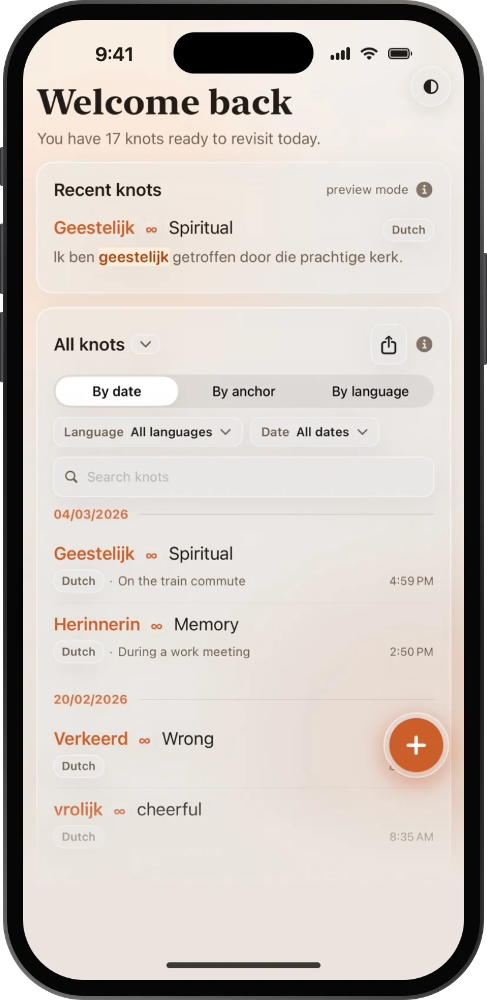
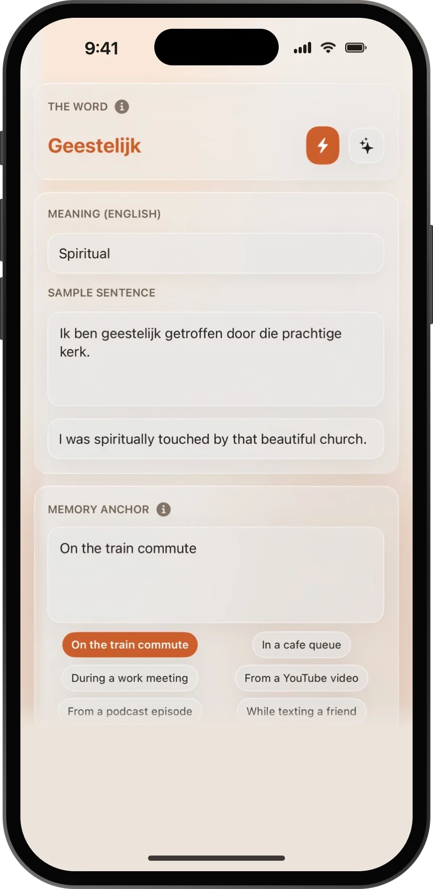

Echoknot
把语言记忆，系回真实瞬间。
在遇到单词的地方记下它，连同翻译、语境和记忆锚点。再把其中三到八个系成一个简短的 Echo 故事，让你真正记住。
平台iPhone
价格免费，可选 Premium
存储本地优先，加密
账号不需要
- 01所有 knot按日期、锚点或语言浏览，附带你遇到它时的那句话。
- 02系一个 knot一个词、它的意思，以及你遇到它的那一刻。


它能做什么
- 记录把单词存成 knot，附上翻译、用法、锚点和标签；需要时让 AI 自动补全。
- Echo 故事选 3–8 个 knot，得到一个属于你的短故事。可以保存、收藏、随时回看。
- 每日 AI免费版每天 30 次自动补全、10 次 Echo；Premium 为 200 次和 30 次。
- 导出随时导出 JSON 或 PDF。
- 可选同步Premium 提供加密云备份，使用 Apple 登录。